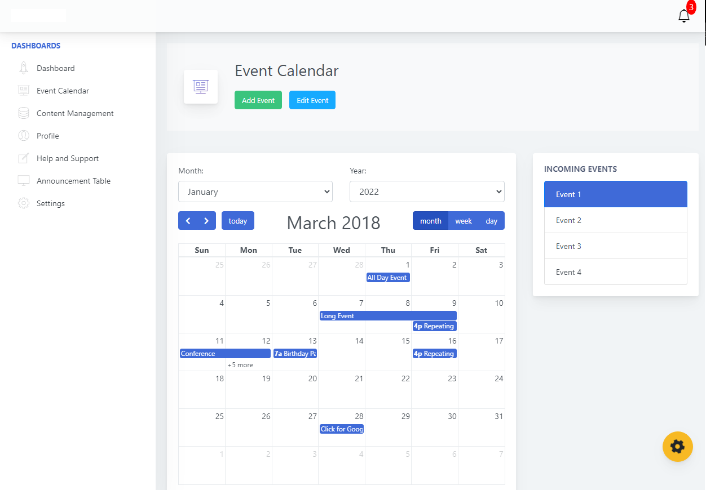
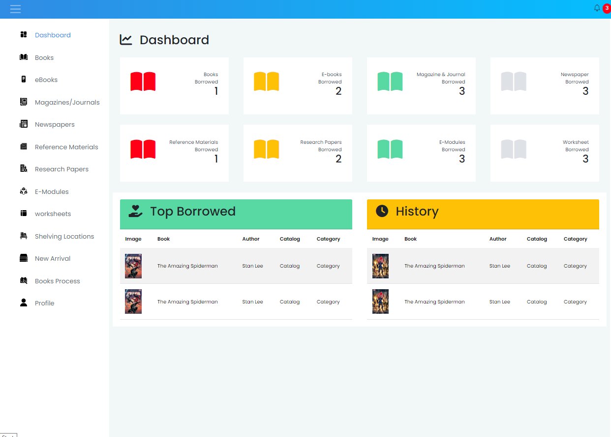
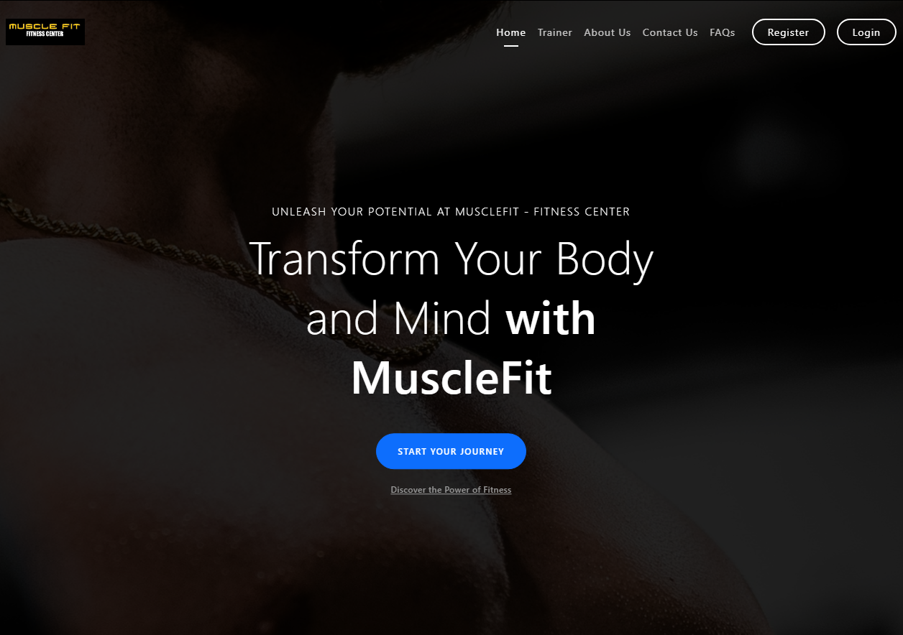
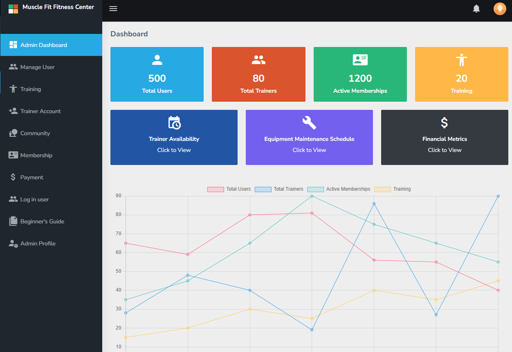
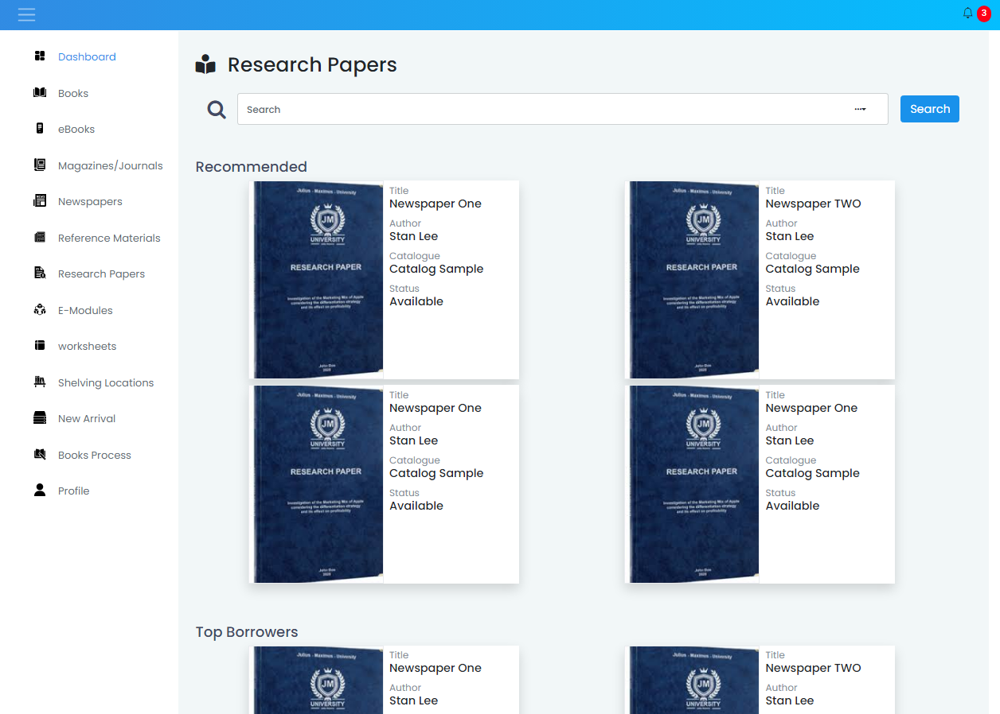

In the realm of web development, each project presents a unique set of challenges and opportunities. From crafting sleek user interfaces to implementing complex functionalities, every step of the development process is guided by a commitment to delivering solutions that meet the diverse needs of clients. As a web developer, I've had the privilege of working on a multitude of projects spanning management systems, audit platforms, library systems, e-commerce websites, and more. In this article, I'll take you through the journey of creating tailored solutions for various clients and businesses, showcasing the iterative process of ideation, design, and implementation that defines each project.
The creation process for each web development project begins with a thorough understanding of the client's requirements and objectives. Through collaborative discussions and detailed consultations, I work closely with clients to gain insights into their business goals, target audience, and desired functionalities. This initial phase lays the foundation for the project, allowing me to tailor the solution to meet the specific needs and preferences of the client.
With a clear understanding of the project scope and objectives in hand, the next step is to embark on the design phase. Drawing upon my expertise in HTML, CSS, JavaScript, jQuery, Ajax, and Bootstrap, I craft intuitive and visually appealing user interfaces that seamlessly align with the client's brand identity and aesthetic preferences. Whether it's a sleek dashboard for a management system or an elegant storefront for an e-commerce website, attention to detail and user experience are paramount at every stage of the design process.Once the design mockups are approved by the client, it's time to bring the vision to life through code. Leveraging the power of PHP for server-side scripting and dynamic content generation, I work meticulously to implement the desired functionalities and features outlined in the project requirements. From database integration to form validation and user authentication, every aspect of the system is carefully crafted to ensure optimal performance and usability.
Throughout the development process, I prioritize communication and collaboration, keeping the client informed of progress milestones and soliciting feedback at key junctures. This iterative approach allows for flexibility and adaptation, ensuring that the final product meets or exceeds the client's expectations.
As the project nears completion, rigorous testing and quality assurance procedures are conducted to identify and rectify any issues or bugs. Once the system has been thoroughly vetted and approved by the client, it's time to deploy the solution to the live environment, where it can begin making a tangible impact on the client's business operations.
In conclusion, the creation process for web development projects is a journey marked by collaboration, creativity, and attention to detail. From management systems to e-commerce websites, each project presents an opportunity to translate client visions into reality, delivering tailored solutions that drive business success and enhance user experiences. As I continue to hone my skills and explore new technologies, I look forward to embarking on future projects that push the boundaries of innovation and creativity in web development.
BackCopyright © Aldren Bagual
Distributed By DrenGual